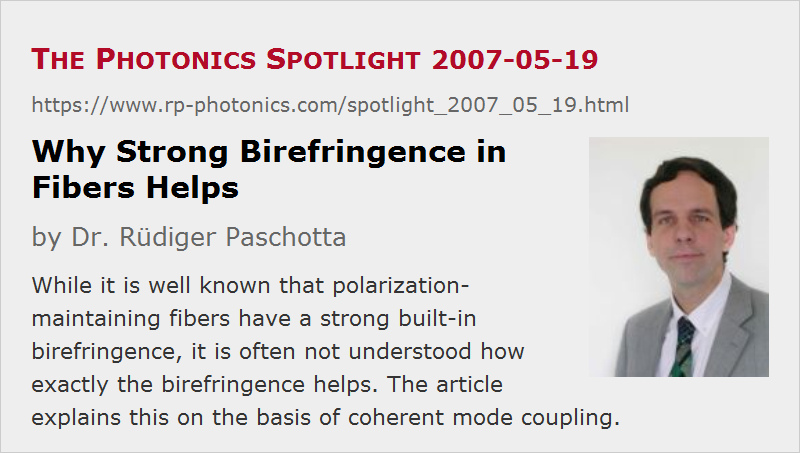

Why Strong Birefringence in Fibers Helps
Posted on 2007-05-19 as a part of the Photonics Spotlight (available as e-mail newsletter!)
Permanent link: https://www.rp-photonics.com/spotlight_2007_05_19.html
Author: Dr. Rüdiger Paschotta, RP Photonics Consulting GmbH
Abstract: While it is well known that polarization-maintaining fibers have a strong built-in birefringence, it is often not understood how exactly the birefringence helps. The article explains this on the basis of coherent mode coupling.

Ref.: encyclopedia articles on birefringence, polarization-maintaining fibers, mode coupling
Maybe you have heard about polarization-maintaining fibers and know that these have a strong built-in birefringence. However, do you also understand why exactly this birefringence helps to maintain a stable polarization state at the fiber output?
One may simply argue that with a strong built-in birefringence, having a well-defined axis, any random disturbances of the refractive index are comparatively small, so that their influence remains weak. However, this picture is rather vague, and it lacks some of the essential physics, which can be best understood by considering the principle of mode coupling:
Imagine that two propagation modes of the fiber with identical optical frequencies but orthogonal polarization directions, according to the directions of the birefringence, propagate in the fiber. Any random fluctuations of the refractive index cause a coupling between these modes: optical amplitude is shuffled back and forth between them. However, strong birefringence causes the propagation constants of the two modes to differ substantially, so that their relative phase rapidly drifts away. As a consequence of that, the mode coupling becomes inefficient: the optical amplitudes coupled from one mode to the other in subsequent short sections of the fiber will quite precisely cancel each other, rather than constructively add up. The only chance for efficient coupling would be that the refractive index fluctuations evolve (e.g. just by chance) in synchronism with the phase difference of the two modes. This can hardly happen, however, if the birefringence is large enough and the index fluctuations are only slowly varying. For quantitative estimates, one may calculate the average magnitude of the spatial Fourier component corresponding to the birefringent beat period.
In conclusion, the birefringence does not really suppress the local coupling of modes (as the simple argument seemed to suggest), but rather prevents any significant accumulation of coupling effects over some length of fiber. A quite neat principle, isn't it?
This article is a posting of the Photonics Spotlight, authored by Dr. Rüdiger Paschotta. You may link to this page and cite it, because its location is permanent. See also the RP Photonics Encyclopedia.
Note that you can also receive the articles in the form of a newsletter or with an RSS feed.
Questions and Comments from Users
Here you can submit questions and comments. As far as they get accepted by the author, they will appear above this paragraph together with the author’s answer. The author will decide on acceptance based on certain criteria. Essentially, the issue must be of sufficiently broad interest.
Please do not enter personal data here; we would otherwise delete it soon. (See also our privacy declaration.) If you wish to receive personal feedback or consultancy from the author, please contact him e.g. via e-mail.
By submitting the information, you give your consent to the potential publication of your inputs on our website according to our rules. (If you later retract your consent, we will delete those inputs.) As your inputs are first reviewed by the author, they may be published with some delay.
|  |
If you like this page, please share the link with your friends and colleagues, e.g. via social media: 


These sharing buttons are implemented in a privacy-friendly way! |
2020-06-19
Does PM fiber reduce the amount of DGD (PMD) or randomness of DGD caused by mode coupling?
Answer from the author:
No, it doesn't – the birefringence increases polarization mode dispersion (PMD).